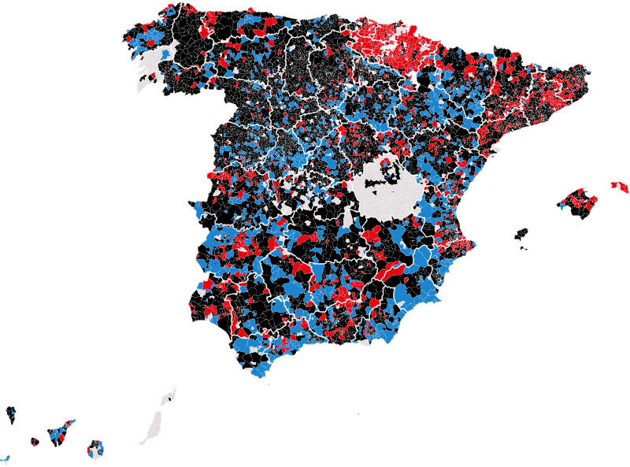

Actualidad · Noventa años después · España
El mapa de 1936 apenas se parece al de hoy: 1.545 pueblos que votaron a las derechas eligen ahora a la izquierda
Hemos cruzado municipio a municipio las generales de febrero de 1936 con las de julio de 2023. De 7.494 municipios con datos, 2.741 han cambiado de bloque. El camino contrario, del Frente Popular a la derecha, lo han hecho menos pueblos pero mucha más gente: Madrid, Sevilla, Málaga, València y Zaragoza.
Por Nacho G. del Álamo ·
Cada párrafo lleva una etiqueta: dato (cifra comprobable con las fuentes), patrón (relación que se repite, sin afirmar la causa), hipótesis (explicación posible, sin dos fuentes independientes) o contexto (hechos y declaraciones publicados por otros, enlazados). Cómo verificamos
ContextoLos resultados por municipio de las elecciones de la Segunda República nunca se publicaron completos. En mayo, los politólogos Toni Rodon (Universitat Pompeu Fabra) y Pau Vall-Prat (Universitat de Barcelona), con Diego Martín Álvarez, publicaron el Atlas Electoral de la Segunda República, con los resultados de 1933 y 1936 pueblo a pueblo, sacados de actas, boletines y prensa de la época. «La idea surge porque muchos estados ofrecen datos de las democracias primigenias pulsando un simple botón», explicó Rodon al Ara. Desde esta semana, esos datos están también en nuestro mapa, junto a todas las generales desde 1977.
DatoCon ellos hemos comparado las dos grandes coaliciones de 1936, el Frente Popular y las derechas (la CEDA y sus aliados), con los dos bloques de 2023: la izquierda (PSOE, Sumar, ERC, EH Bildu y BNG) y la derecha y el centroderecha (PP, Vox, Junts, PNV y Coalición Canaria). En 5.051 de los 7.494 municipios con datos de las dos elecciones, las derechas sacaron más votos que el Frente Popular en 1936. En 1.545 de ellos, en 2023 la izquierda sumó más que la derecha.

DatoLos mayores son Vitoria-Gasteiz, donde las derechas sacaron el 53,3% en 1936 y la izquierda el 60,0% en 2023, y Pamplona, que pasó del 67,3% de las derechas al 56,0% de la izquierda. Les siguen Leganés, Fuenlabrada, San Cristóbal de La Laguna y Parla, donde las derechas llegaron al 77,5%. Por comunidades, la mayoría están en Cataluña (317), Navarra (180), el País Vasco (169), Andalucía (149), la Comunidad Valenciana (145) y Castilla y León (143). Entre todos suman 5,2 millones de habitantes.
PatrónNavarra y el País Vasco son los casos más claros. En 1936, en 180 de los 227 municipios navarros con datos ganaron las derechas y en 2023 ganó la izquierda; en el País Vasco, 169 de 229. Allí, la candidatura de las derechas de 1936 incluía a los tradicionalistas, y la izquierda de hoy incluye a EH Bildu, un partido que no existía. En Cataluña pasa algo parecido: las derechas de 1936 eran el Front Català d'Ordre, con la Lliga, y la izquierda de 2023 incluye a ERC, que en 1936 iba en el Front d'Esquerres.
Las ciudades hicieron el camino contrario
DatoEn 1.196 municipios el Frente Popular sacó más votos que las derechas en 1936 y en 2023 la derecha sumó más que la izquierda. Son menos pueblos, pero mucho más grandes: viven en ellos 17,8 millones de personas, más del triple que en los que cambiaron hacia la izquierda. De las 63 ciudades de más de 100.000 habitantes con datos de 1936, el Frente Popular ganó en 50. En 2023, la izquierda ganó en 27.
DatoMadrid votó al Frente Popular con el 55,9%; en 2023, la derecha sacó el 54,2%. En Sevilla, el Frente Popular llegó al 63,5%, y la derecha sumó el 49,6% en 2023. Los mayores contrastes están en Málaga (81,2% para el Frente Popular en 1936, 52,8% para la derecha en 2023), Alicante (81,1% y 54,0%) y Algeciras (80,9% y 58,0%). Barcelona, L'Hospitalet, Vigo, Gijón o Bilbao votaron a la izquierda en las dos elecciones.
PatrónUna parte de la explicación está en quién vive hoy en cada sitio. Parla tenía 803 electores en 1936 y 80.040 en 2023; Fuenlabrada, 621 y 140.746. Eran pueblos pequeños que crecieron con la llegada de nuevos vecinos, y quienes votan hoy allí tienen poco que ver con quienes votaban entonces. En el otro extremo, los municipios donde las derechas ganaron en las dos elecciones tienen hoy, en la mediana, la mitad de electores que en 1936 (49%), aunque entonces solo votaban los mayores de 23 años. Los que votaron a la izquierda en las dos tienen más (104%).
Dónde se parecen los dos mapas
DatoPara el conjunto de España, el voto al Frente Popular en 1936 y el de la izquierda en 2023 apenas se parecen: la correlación entre los dos, municipio a municipio, es de 0,26, donde 1 sería un parecido perfecto y 0 ninguno. Por provincias hay más diferencias. El parecido es mayor en León (0,50), Asturias (0,44), Palencia (0,42) y Lleida (0,41), y desaparece en Álava, Gipuzkoa, Navarra y Murcia, donde está alrededor de cero.
ContextoEn Cataluña, Vall-Prat sí ve continuidades: «Donde se votaba más a la Lliga después se ha votado más habitualmente partidos conservadores», dijo al Ara. Y añadió: «Estos datos nos permiten entender mejor el funcionamiento de las dinámicas de competición política de aquel momento».
En 1936 se votaba más
DatoEn los 4.300 municipios con participación conocida en las dos elecciones, en 1936 votó el 73,3% del censo y en 2023, el 71,6%. En 2.044 de ellos se votó más en 1936. La comparación tiene trampa: en 1936 solo votaban los mayores de 23 años, y en 2023, los de 18 en adelante.
ContextoTanto en 1933 como en 1936 votaron ya las mujeres. El sufragio femenino entró en la Constitución de 1931 tras un debate en las Cortes en el que lo defendió Clara Campoamor: «Dejad que la mujer se manifieste y veréis como ese poder no podéis seguir detentándolo», dijo en su discurso del 1 de octubre de 1931.
Lo que estos datos no dicen
ContextoLas elecciones de 1936 siguen siendo objeto de debate. Los historiadores Manuel Álvarez Tardío y Roberto Villa García publicaron en 2017 un libro, 1936. Fraude y violencia en las elecciones del Frente Popular, que según su editorial acaba «describiendo y demostrando la existencia de fraude electoral» en varias provincias. Eduardo González Calleja y Francisco Sánchez Pérez les respondieron en la revista Historia Contemporánea que «no se puede sostener que las irregularidades detectadas en una serie de provincias determinaron el resultado final». Los datos del Atlas son los que se recogieron en su día; no corrigen ni confirman ese debate.
ContextoEl Atlas tampoco está completo. «En Zamora, por ejemplo, no hay resultados porque se destruyeron», explicó Rodon al Ara sobre la primera versión, y en la actual faltan Cuenca y Pontevedra en 1936. «Es un periodo que, en muchos lugares, no quieren remover», añadió. En el recuento más citado, el Frente Popular sacó el 48,7% de los votos en toda España.
ContextoY un municipio no son sus votantes. En 1936 se votaba con listas abiertas: cada elector podía marcar varios candidatos, y aquí el peso de cada bloque es la parte de los votos a candidatos que se llevó. Quienes votaron en 1936 tendrían hoy al menos 113 años: el mapa compara lugares, no personas.
Ver los 1.545 municipios que pasaron de las derechas a la izquierda
Mira 1933 y 1936 en tu municipio, en el mapa · Más: Los feudos de la izquierda que cambiaron de bloque · El 1936 Salt votava més que avui
Método y fuentes
- Qué se compara
- Los 7.494 municipios actuales con datos de las generales del 16 de febrero de 1936 y del 23 de julio de 2023. En 1936, el Frente Popular frente a las derechas (la CEDA y sus aliados, con el Front Català d'Ordre en Cataluña). En 2023, la izquierda (PSOE, Sumar, ERC, EH Bildu y BNG) frente a la derecha y el centroderecha (PP con UPN, Vox, Junts, PNV y Coalición Canaria).
- Límites
- Los bloques de 1936 y los de 2023 no son los mismos partidos: comparamos coaliciones de entonces con sumas de partidos de ahora. Contar a Junts, PNV y CC con la derecha es una decisión; si solo se cuentan PP y Vox, los municipios que pasan de las derechas a la izquierda son 1.662. En 1936 se votaba con listas abiertas y varios votos por elector; el peso de cada bloque es su parte de los votos a candidatos. El censo de 1936 era de mayores de 23 años y el de 2023, de 18. Faltan Cuenca y Pontevedra en 1936 y hay huecos en otras provincias; los municipios desaparecidos se suman al actual en que se integraron, según el INE. Los datos de 1936 son los del Atlas, que no resuelven el debate sobre irregularidades en algunas provincias. Sin voto exterior en 2023.
- Cómo se calcula
- Bloque ganador: el que suma más porcentaje de voto en el municipio (en 1936, sobre los votos a candidatos; en 2023, sobre los votos a candidaturas). Se excluyen 12 empates. Correlación de Pearson entre el porcentaje del Frente Popular en 1936 y el de la izquierda en 2023, municipio a municipio. Participación: votantes sobre censo de cada elección, en los 4.300 municipios con las dos cifras. Cifras reproducibles con los scripts del expediente de la pieza. Metodología de Actualidad · Metodología del Atlas
- Fuentes
- Toni Rodon, Pau Vall-Prat y Diego Martín Álvarez, Electoral Atlas of the Spanish Second Republic (1931-1936), Universitat Pompeu Fabra, CORA Repositori de Dades de Recerca (CC BY-NC-SA 4.0)
- Ministerio del Interior, resultados electorales por mesa (Infoelectoral), vía pollspaindata. Sin voto exterior (CERA)
- INE, Alteraciones de los municipios en los Censos de Población desde 1842
- Aleix Moldes, «¿Qué votaron en tu pueblo en 1936? El mapa electoral de la Segunda República», Ara (8-5-2026)
- Eduardo González Calleja y Francisco Sánchez Pérez, «Revisando el revisionismo. A propósito del libro 1936. Fraude y violencia en las elecciones del Frente Popular», Historia Contemporánea 58 (2018)
- Espasa, sinopsis de 1936. Fraude y violencia en las elecciones del Frente Popular, de Manuel Álvarez Tardío y Roberto Villa García (2017)
- Clara Campoamor, discurso en las Cortes del 1 de octubre de 1931
- Wikipedia, «Elecciones generales de España de 1936» (consultada el 22-10-2026)
- Autoría
- Nacho G. del Álamo
- Revisión de datos y texto
- Nacho G. del Álamo, 22 de octubre de 2026
- Publicado · actualizado
- 22 de octubre de 2026 · 22 de octubre de 2026
- Correcciones
- Ninguna.
Serie «Historia electoral»: 29 piezas
- Barcelona, Terrassa o Dos Hermanas: 864 municipios donde la derecha estatal nunca ha ganado unas generales
- Pozuelo, Getxo o Ávila: 1.932 municipios donde el PSOE nunca ha ganado unas generales
- Siete partidos distintos han ganado en Mont-roig del Camp: ha cambiado 11 veces de ganador en 16 generales
- En Baltar votó el 16 % en 1979; hoy vota el 79 %. La participación imposible del interior gallego
- En Arona votó uno de cada cinco electores en las europeas de 2014
- Tres partidos en 1,3 puntos: el empate a tres de Euskadi en 2023 no tiene precedentes
- El voto en blanco se multiplicó por seis entre 1977 y 2000, y desde entonces se ha reducido a la mitad
- Antes de Teruel Existe: los cinco diputados andalucistas de 1979 y el 19,7 % de Cádiz
- De 23,6 a 35,1 millones: el censo electoral ha crecido un 49 % desde 1977
- Las europeas solo superan el 60 % de participación cuando coinciden con las municipales
- Estás aquíEl mapa de 1936 apenas se parece al de hoy: 1.545 pueblos que votaron a las derechas eligen ahora a la izquierda
- Fuente Vaqueros, el pueblo de Lorca, dio el 77,5 % al Frente Popular; Víznar, donde lo mataron, el 63 % a las derechas
- Gernika votó al PNV en 1936 y volvió a hacerlo en 2023, por 11 votos; Belchite tiene hoy menos electores que antes de su batalla
- Las mujeres votaron por primera vez en 1933 y ganaron las derechas; en 1936 volvieron a votar y 888 pueblos se pasaron al Frente Popular
- 256 pueblos han votado a la izquierda en 1936 y en las 16 generales de la democracia; 1.610, siempre a la derecha
- Cuando la CNT pidió no votar, en Alcalá de Gurrea votaron 87 de 829 electores; dos años después, 517
- Riaño dio el 86 % a las derechas en 1936; Mequinenza, el 89 % al Frente Popular. Así votaban los pueblos que se tragaron los pantanos
- Vallecas dio el 86 % al Frente Popular y Franco la borró del mapa: los 1.334 pueblos que votaron en 1936 y ya no existen
- Mieres votó en masa dieciséis meses después de la revolución: el 86 % fue a las urnas y el 79 % eligió al Frente Popular
- Vic dio el 69 % a la Lliga en 1933 y hoy es la gran ciudad de Junts; L'Hospitalet dio el 77 % al Front d'Esquerres de Companys y hoy vota al PSC
- Ver las 29 piezas de la serie
Más datos: más piezas sobre historia electoral.
Sigue leyendo
- Israel, las cuentas del 61Con el 97% escrutado, Netanyahu solo llega a 61 escaños si suma a Ra'am, el partido islamista árabe
- Las llaves y la urnaDonde viven los caseros gana el PP; donde viven los inquilinos, gana la abstención
- Quién votaEn los barrios ricos se vota 15 puntos más que en los pobres, y en las europeas, 22: quién vota en España según la renta, la edad y la inmigración
- ActualidadTodas las piezas de actualidad
- AtlasAtlas de las anomalías electorales